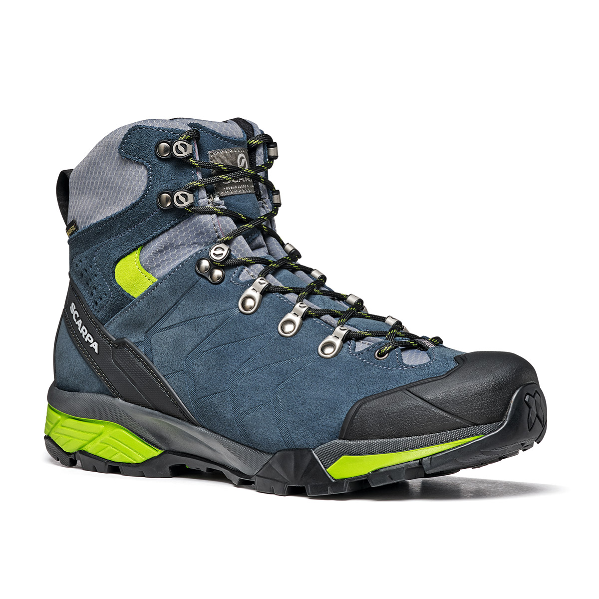
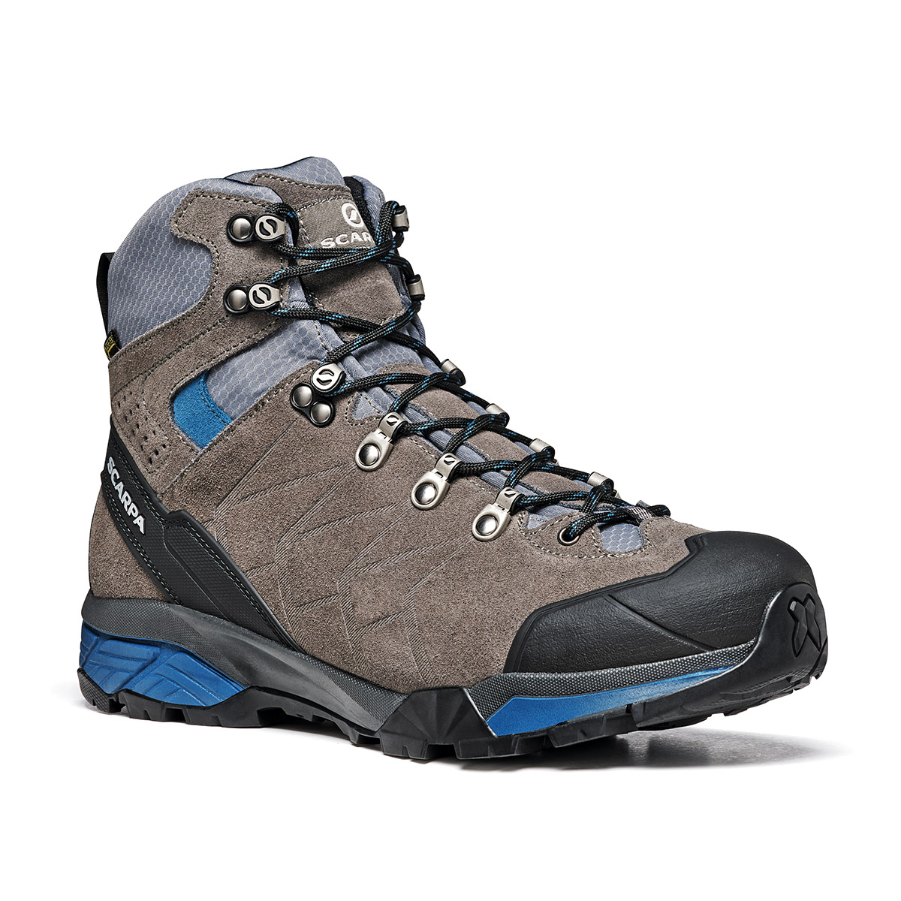

このページは、イオンモール各務原店が
サービス向上のため、試験中のものです
スカルパ
ZGトレックGTX
 
【 足形 】
標準幅
【 フィット感 】
つつまれ感重視
【 適する登山道 】
里山～アルプスの岩稜帯
１．こんな方におすすめ
２．おすすめポイント
【 店員 M 】
日本の登山道をカバーする懐の深さを持ち、イタリア靴技術の高さを感じさせてくれる一品。今の登山靴がゆったり目の場合に、ぜひ試して頂きたい。